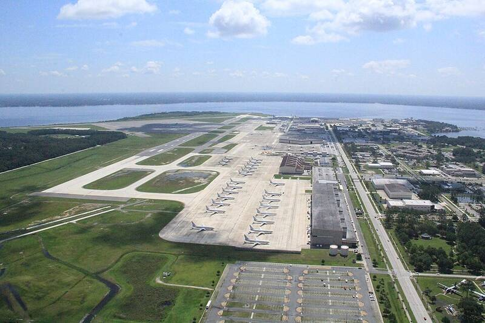

NAS Jacksonville and NS Mayport
Florida

Major Navy hub in northeast Florida. 1
Open in the interactive Watcher
Sources
- Naval Air Station Jacksonville Wikipedia
Florida

Major Navy hub in northeast Florida. 1
Open in the interactive Watcher